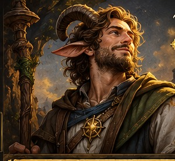

<!doctype html>
<html lang="fr">
<head>
<meta charset="utf-8"><meta name="viewport" content="width=device-width, initial-scale=1, viewport-fit=cover">
<meta name="theme-color" content="#17120f"><link rel="manifest" href="./manifest.webmanifest"><title>Grimoire de Therkos Dimitry</title>
<style>
:root{--night:#120f0d;--night2:#211813;--gold:#d9b96c;--gold2:#f5dfa0;--paper:#f4e8c9;--paper2:#e7d3a4;--ink:#2a2118;--blue:#20465a;--green:#3d6845;--red:#9d3c32;--line:#b8934e;--muted:#8b7d65;--shadow:0 12px 28px #0004}
*{box-sizing:border-box}html{scroll-behavior:smooth}body{margin:0;background:radial-gradient(ellipse at top,#392819 0,#17110e 45%,#0d0b0a 100%);color:var(--paper);font-family:Georgia,'Times New Roman',serif;min-height:100vh}button,input,select,textarea{font:inherit}button{cursor:pointer;transition:transform .12s,filter .12s}button:hover{filter:brightness(1.08)}button:active{transform:translateY(1px)}.app{max-width:1240px;margin:auto;padding:20px 18px 56px}.topbar{display:flex;align-items:center;justify-content:space-between;gap:16px;border-bottom:1px solid #987b42;padding:6px 0 16px;margin-bottom:26px}.brand{display:flex;align-items:center;gap:12px;color:var(--gold2);font-size:clamp(1.1rem,3vw,1.8rem);font-weight:bold}.brand .sigil{font-size:2rem;color:var(--gold)}.top-actions{display:flex;gap:8px;flex-wrap:wrap}.btn,.btn-secondary,.btn-danger,.btn-quiet{border:1px solid #b28e4b;border-radius:10px;padding:10px 14px;background:linear-gradient(#f0d68f,#c39a42);color:#24190b;font-weight:bold;box-shadow:0 3px 0 #6b4b1b}.btn-secondary{background:#30251b;color:#f6e6bd;border-color:#816331;box-shadow:none}.btn-danger{background:#7d3028;color:#fff0db;border-color:#bd7164;box-shadow:none}.btn-quiet{background:transparent;color:var(--gold2);box-shadow:none}.hero{padding:18px 0 26px}.eyebrow{color:var(--gold);font-size:.76rem;letter-spacing:.18em;text-transform:uppercase}.hero h1{font-size:clamp(3rem,9vw,6rem);line-height:.95;margin:14px 0;color:#fff0cb}.hero p{font-size:1.1rem;color:#d8c6a0;max-width:650px}.divider{height:1px;background:linear-gradient(90deg,transparent,#b28b45,transparent);margin:26px 0}.section-title{display:flex;align-items:center;justify-content:space-between;gap:12px;flex-wrap:wrap;margin:20px 0}.section-title h2{margin:0;color:var(--gold2);font-size:clamp(1.7rem,4vw,2.5rem)}.muted{color:#a99a7e}.grid{display:grid;grid-template-columns:repeat(auto-fit,minmax(min(100%,270px),1fr));gap:16px}.campaign-card{position:relative;overflow:hidden;border:1px solid #9f7b37;border-radius:18px;padding:22px;background:linear-gradient(140deg,#4c351b,#231a13 65%,#17110d);box-shadow:var(--shadow);min-height:220px;display:flex;flex-direction:column;justify-content:space-between}.campaign-card:after{content:'✦';position:absolute;right:18px;top:4px;font-size:5rem;color:#c5a45d22;pointer-events:none}.campaign-card h3{font-size:1.7rem;margin:12px 0;color:#ffe6a3}.campaign-card p{color:#d9c8a5;line-height:1.5}.campaign-card .btn{align-self:flex-start;position:relative;z-index:1}.campaign-emblem{font-size:2rem;color:var(--gold)}.empty{padding:24px;border:1px dashed #876c3d;border-radius:14px;color:#d2bd8e}.paper-view{background:radial-gradient(ellipse at 50% 0,#fff9e7,#f0dfb8 65%,#e1c98f);color:var(--ink);border:4px double #b28a43;border-radius:8px;padding:clamp(14px,3vw,30px);box-shadow:0 12px 32px #0005;position:relative}.paper-view:before{content:'✦  ✧  ✦';position:absolute;right:16px;top:10px;color:#bd9b4c;letter-spacing:.4em}.paper-head{text-align:center;border-bottom:2px solid #b58b40;padding:8px 0 18px;margin-bottom:20px}.paper-head h1{font-size:clamp(2rem,6vw,4rem);line-height:1;margin:6px;color:#182c2b}.paper-head .subtitle{font-size:1.1rem;color:#65461d}.character-card{background:linear-gradient(135deg,#fff1c9,#dfc68c);border:3px double #b28a43;border-radius:14px;padding:18px;color:var(--ink);box-shadow:0 5px 14px #2c1d0b22;display:flex;flex-direction:column;gap:10px}.character-card h3{font-size:1.6rem;margin:0;color:#183c4b}.character-card .sigil{font-size:2rem;color:#aa7b22}.character-card p{margin:0;color:#5e4a2d}.character-card .btn{align-self:flex-start}.backline{display:flex;align-items:center;justify-content:space-between;gap:10px;flex-wrap:wrap;margin-bottom:16px}.tabs{display:flex;gap:7px;flex-wrap:wrap;margin:16px 0 22px}.tab{border:1px solid #9f7b37;border-radius:9px;padding:10px 13px;background:#281d15;color:#e9d5a2}.tab.active{background:linear-gradient(#f0d68f,#c39a42);color:#281b0a;font-weight:bold}.sheet-tabs .tab{background:#f1e0b9;color:#513a19;border-color:#b8934e}.sheet-tabs .tab.active{background:#20465a;color:#fff1c8;border-color:#d7b46b}.card{background:#fff6dfd9;border:1px solid #c8a663;border-radius:12px;padding:16px;color:var(--ink);box-shadow:0 4px 12px #39250d13}.card h3{margin:0 0 12px;color:#1f4658;font-size:1.25rem}.card h4{margin:14px 0 6px;color:#68491c}.cols{display:grid;grid-template-columns:repeat(auto-fit,minmax(min(100%,290px),1fr));gap:14px}.stats{display:grid;grid-template-columns:repeat(auto-fit,minmax(100px,1fr));gap:8px}.stat{border:1px solid #c9a55c;border-radius:9px;padding:10px;text-align:center;background:#fff9e9}.stat small{display:block;color:#77613a;font-size:.75rem}.stat b{font-size:1.5rem;color:#203f4c}.field{display:flex;flex-direction:column;gap:5px;margin:9px 0}.field label{font-size:.86rem;font-weight:bold;color:#60471f}.field input,.field select,.field textarea,.inline-input{width:100%;border:1px solid #c4a66a;border-radius:8px;padding:10px;background:#fffdf4;color:#261e16;min-width:0}.formrow{display:grid;grid-template-columns:repeat(2,minmax(0,1fr));gap:10px}.small{padding:7px 10px;font-size:.88rem}.tiny{font-size:.82rem;color:#786444;line-height:1.45}.notice{background:#f3e2b5;border-left:4px solid #b58b40;padding:12px;border-radius:6px;color:#5a421c;margin-top:12px}.good{color:#23633d}.bad{color:#9b312b}.combat-header{display:grid;grid-template-columns:repeat(auto-fit,minmax(145px,1fr));gap:12px}.hp-panel{background:linear-gradient(140deg,#fff5d8,#e7cf99);border:2px solid #b18a40;border-radius:14px;padding:16px;color:#2b2117}.hp-big{font-size:2.8rem;font-weight:bold;line-height:1.1}.hp-track{height:12px;background:#c9b88e;border-radius:99px;overflow:hidden;margin:10px 0}.hp-fill{height:100%;background:linear-gradient(90deg,#418653,#75a65b);transition:width .2s}.temp-box{background:#dbeefa;border:1px solid #75a9c4;border-radius:10px;padding:12px;color:#17455b}.quick-actions{display:flex;gap:8px;flex-wrap:wrap}.spell-card{border:1px solid #c5a15a;border-radius:11px;overflow:hidden;background:#fff8e6;color:#2a2118}.spell-card header{background:linear-gradient(90deg,#1d4858,#2b6674);color:#fff1c9;padding:11px 13px;display:flex;justify-content:space-between;align-items:center;gap:8px}.spell-card .spell-body{padding:13px}.pill{display:inline-block;border-radius:999px;background:#ead6a5;color:#65451b;padding:4px 9px;font-size:.76rem;font-weight:bold}.resource{display:flex;align-items:center;justify-content:space-between;gap:10px;padding:10px;border-bottom:1px solid #e2d0a6}.resource:last-child{border-bottom:0}.dots{display:flex;gap:6px;flex-wrap:wrap}.dot{width:26px;height:26px;border-radius:50%;border:2px solid #a27a2b;background:#fff9e9;color:#634618}.dot.used{background:#9e7930;color:white}.treasure-total{background:linear-gradient(120deg,#f6e6ae,#d8b45d);border:2px double #a57a2e;border-radius:13px;padding:17px;color:#35250b;margin:12px 0}.treasure-total b{font-size:2rem}.treasure-row{display:grid;grid-template-columns:minmax(130px,1.5fr) .6fr .8fr .8fr auto;gap:8px;align-items:center;padding:10px 2px;border-bottom:1px solid #dfc999}.treasure-row input{width:100%;min-width:55px;padding:7px;border:1px solid #c4a66a;border-radius:7px;background:#fffaf0;color:#211b15}.table-wrap{overflow-x:auto}table{border-collapse:collapse;width:100%;font-size:.9rem}th,td{text-align:left;padding:8px;border-bottom:1px solid #dec99b;vertical-align:top}th{color:#60451b}.checkline{display:flex;align-items:center;gap:10px;padding:10px;background:#fff8e6;border:1px solid #d5bb7d;border-radius:9px}.checkline input{width:22px;height:22px;accent-color:#9d7a2e}.footer{text-align:center;color:#9c8964;font-size:.85rem;margin:28px 0 0}.hidden{display:none!important}.modal-backdrop{position:fixed;inset:0;background:#000a;display:flex;align-items:center;justify-content:center;padding:18px;z-index:20}.modal{max-width:540px;width:100%;background:#f4e6c5;color:#2a2118;border:3px double #b28a43;border-radius:14px;padding:20px;box-shadow:var(--shadow)}.modal h2{margin-top:0}.mobile-nav{display:none}@media(max-width:650px){.app{padding:12px 10px 36px}.topbar{align-items:flex-start}.top-actions .btn-quiet{display:none}.treasure-row{grid-template-columns:1fr 1fr 1fr;}.treasure-row>div:first-child{grid-column:1/-1}.treasure-row>button{grid-column:3}.tabs{display:grid;grid-template-columns:repeat(3,minmax(0,1fr))}.tab{text-align:center;padding:9px 4px;font-size:.88rem}.paper-view{padding:13px}.hero h1{font-size:3.5rem}.formrow{grid-template-columns:1fr 1fr}}

.wallet-banner{display:flex;align-items:center;justify-content:space-between;gap:18px;padding:20px 22px;margin:12px 0 18px;border:1px solid #b18a42;border-radius:16px;background:linear-gradient(120deg,#fff0c8,#e6c16c 58%,#f8e9bd);color:#33230d;box-shadow:0 8px 20px #4a2c0d20}
.wallet-total{font-family:Georgia,serif;font-size:clamp(1.8rem,4vw,2.6rem);font-weight:800;line-height:1.15;margin:5px 0}
.wallet-coins{display:flex;flex-wrap:wrap;gap:9px}.wallet-coins span{background:#fff9e8;border:1px solid #d6bb7a;border-radius:999px;padding:8px 12px;white-space:nowrap}
.wallet-transaction{border-top:1px solid var(--line,#d9cba8);margin-top:18px;padding-top:14px}.wallet-transaction h4{margin:0 0 10px;color:var(--ink,#33230d)}
.wallet-transaction select{width:100%;padding:10px;border:1px solid #c9b783;border-radius:9px;background:#fffaf0;color:#2b2114}
@media(max-width:700px){.wallet-banner{align-items:flex-start;flex-direction:column}.wallet-coins{gap:6px}.wallet-coins span{padding:6px 9px}}

.satyr-traits{margin-top:14px;border:1px solid #c79b46;background:linear-gradient(145deg,#fffaf0,#f5e7c5);color:#302412}
.satyr-traits h3{color:#78521a}.satyr-traits h4{margin:.4rem 0;color:#78521a}.satyr-traits p{line-height:1.5}
.combat-magic{margin-top:14px;border:1px solid #c79b46;background:linear-gradient(145deg,#fffaf0,#f8edcf);color:#302412}
.combat-magic h3,.combat-magic h4{color:#78521a}
.cast-row{display:flex;gap:10px;align-items:center;justify-content:space-between;flex-wrap:wrap;border-top:1px solid #e1d0a9;padding:10px 0}
.cast-row:first-of-type{border-top:0}.cast-meta{flex:1;min-width:180px}.cast-meta small{display:block;color:#695c47}
.combat-magic .btn:disabled,.combat-magic button:disabled{opacity:.45;cursor:not-allowed}
@media(max-width:700px){.satyr-traits .cols{grid-template-columns:1fr}}

/* Tableau de magie façon grimoire */
.combat-resource-grid{display:grid;grid-template-columns:repeat(3,minmax(0,1fr));gap:12px;margin:12px 0 18px}
.magic-resource-card{border:1px solid #c69a42;border-radius:13px;padding:14px;background:linear-gradient(145deg,#fff8e4,#f3e0aa);color:#34240d;box-shadow:inset 0 0 0 2px #fff9e8}
.magic-resource-icon{font-size:1.6rem;color:#98701e}.magic-resource-title{font-weight:700}.magic-resource-count{font-family:Georgia,serif;font-size:1.55rem;font-weight:800;margin:5px 0}
.magic-dots{display:flex;gap:7px;margin:5px 0 12px;color:#b7a47d}.magic-dots span{font-size:1.15rem}.magic-dots .ready{color:#b37d14;text-shadow:0 0 5px #e8c25b}
.resource-disabled{opacity:.62;filter:saturate(.5)}.channel-card{background:linear-gradient(145deg,#fff1c2,#e7c05d)}
.combat-dc-grid{display:grid;grid-template-columns:repeat(4,minmax(0,1fr));gap:9px;margin:12px 0}
.combat-dc-grid>div{display:flex;flex-direction:column;gap:5px;padding:12px;border:1px solid #d8bf82;border-radius:10px;background:#fff9e9}
.combat-dc-grid small,.combat-dc-grid span{font-size:.78rem;color:#765a2a}.combat-dc-grid b{font-family:Georgia,serif;font-size:1.7rem;color:#21475b}
.channel-quick-list{margin:16px 0;padding:12px;border:1px solid #c69a42;border-radius:12px;background:#fffaf0}.channel-quick-list h4{margin:0 0 8px}
.spell-tile{position:relative;overflow:hidden;border-radius:13px;border:1px solid #c99b43;background:linear-gradient(160deg,#fffdf5,#f7e9c7);box-shadow:0 4px 12px #4b2b1010}
.spell-tile:before{content:"";display:block;height:5px;background:linear-gradient(90deg,#1d5268,#d8b45d,#1d5268)}
.spell-tile.level-one:before{background:linear-gradient(90deg,#7f241c,#d8a33b,#7f241c)}
.spell-tile.level-two:before{background:linear-gradient(90deg,#633b85,#d8b45d,#633b85)}
.spell-tile-top{display:flex;align-items:center;gap:7px;flex-wrap:wrap;margin-bottom:8px}
.spell-glyph{display:inline-grid;place-items:center;width:35px;height:35px;border-radius:9px;background:#1d5268;color:#ffe6a1;font-size:1.35rem;border:1px solid #c99b43}
.level-one .spell-glyph{background:#7f241c}.level-two .spell-glyph{background:#633b85}
.spell-tile header{font-family:Georgia,serif;font-size:1.12rem;color:#1d4052}
.spell-facts{display:flex;gap:7px;flex-wrap:wrap;margin:8px 0}.spell-facts span{font-size:.76rem;background:#f0dfb5;border-radius:999px;padding:4px 7px;color:#60471e}
@media(max-width:850px){.combat-resource-grid{grid-template-columns:1fr}.combat-dc-grid{grid-template-columns:repeat(2,minmax(0,1fr))}}

/* Lisibilité renforcée des cartes de sorts : le bleu reste décoratif, jamais derrière le texte. */
.spell-card.spell-tile{background:#fff9e8;color:#2a2118;border:1px solid #bd8d32;box-shadow:0 5px 14px #53371316}
.spell-card.spell-tile header{background:#f1dfb4!important;color:#243746!important;padding:10px 12px;border-top:1px solid #d4b46b;border-bottom:1px solid #d4b46b;display:flex;justify-content:flex-start;align-items:center;gap:8px}
.spell-card.spell-tile header b{color:#243746!important;font-size:1.08rem;line-height:1.3;text-shadow:none}
.spell-card.spell-tile .spell-body{background:#fff9e8;color:#2a2118;padding:13px;line-height:1.48;font-size:.96rem}
.spell-card.spell-tile .spell-body p{color:#30271c;line-height:1.5;margin:10px 0}
.spell-card.spell-tile .spell-body .tiny{color:#5e4b31;line-height:1.4}
.spell-card.spell-tile .spell-facts span{background:#f1e1b9;color:#503917;border:1px solid #e2cc91;font-size:.8rem}
.spell-card.spell-tile .spell-tile-top{padding:10px 12px 0;margin-bottom:7px}
.spell-card.spell-tile .spell-glyph{flex:0 0 35px}
.spell-card.spell-tile .pill{color:#4c3513;background:#ead39a}
.spell-card.spell-tile .btn-quiet{color:#76521b;border-color:#b78b35}
/* Illustrations originales des sorts, en harmonie avec le grimoire */
.spell-art{display:block;width:100%;height:132px;object-fit:cover;border-bottom:2px solid #c49a45;background:#2b2116}
.spell-card.spell-tile .spell-art-wrap{position:relative;overflow:hidden;background:#2b2116}
.spell-card.spell-tile .spell-art-wrap:after{content:"";position:absolute;inset:0;box-shadow:inset 0 0 0 3px #d5ad58, inset 0 0 18px #24160655;pointer-events:none}
@media(min-width:900px){.spell-art{height:150px}}
@media(max-width:650px){.spell-art{height:120px}}
.spell-card.spell-tile .btn-secondary{color:#ffe9ae;background:#332516;border-color:#9c742b}
.spell-card.spell-tile .quick-actions{gap:7px;flex-wrap:wrap}
.spell-card.spell-tile:focus-within{outline:2px solid #a87926;outline-offset:2px}

/* Direction artistique enrichie : portrait, parchemin, laiton et encre sombre */
:root{--blue:#244758;--paper:#f7e8c3;--paper2:#e8cf96;--ink:#21180f;--gold:#d6ad53;--line:#b78a35}
body{background:radial-gradient(ellipse at 18% 0%,#594126 0,#211710 38%,#0b0a09 100%)}
.app{max-width:1500px;padding:18px clamp(10px,2vw,28px) 50px}
.topbar{position:relative;border:1px solid #8f6b2b;border-radius:12px;padding:12px 16px;background:linear-gradient(100deg,#17120f,#2b2015 58%,#17120f);box-shadow:0 6px 20px #0005}
.brand{font-size:clamp(1.1rem,2.8vw,2rem);letter-spacing:.02em}.brand .sigil{display:inline-grid;place-items:center;border:1px solid #b68a32;border-radius:50%;width:44px;height:44px;background:#2c2115}
.paper-view{background:radial-gradient(ellipse at 50% 0,#fff9e9 0,#f2dfb0 65%,#ddc184 100%);border:5px double #a97928;box-shadow:0 12px 32px #0007}
.character-sheet-shell{padding:clamp(10px,2vw,26px)}
.character-hero{display:grid;grid-template-columns:minmax(190px,30%) 1fr;gap:clamp(14px,2vw,28px);align-items:stretch;margin:-4px -4px 20px;padding:12px;border:2px solid #a57a2d;border-radius:12px;background:linear-gradient(120deg,#17130f,#392918 55%,#17130f);color:#fff0c8;box-shadow:inset 0 0 0 2px #e3c57430}
.therkos-portrait{width:100%;height:100%;min-height:245px;max-height:360px;object-fit:cover;object-position:50% 24%;border:2px solid #c49b43;border-radius:8px;box-shadow:0 5px 18px #0008}
.character-hero-copy{display:flex;flex-direction:column;justify-content:center;padding:10px 12px}.character-hero-copy h1{font-size:clamp(2rem,5vw,4.4rem);line-height:1;margin:9px 0;color:#fff0c8}.character-hero-copy .subtitle{font-size:clamp(1rem,2vw,1.35rem);color:#e5c46f}.hero-quote{font-style:italic;color:#d7c39c;margin:20px 0}.hero-chips{display:flex;gap:8px;flex-wrap:wrap}.hero-chips span{padding:7px 10px;border:1px solid #b58b40;border-radius:999px;background:#fff1c51a;color:#ffedbd;font-size:.9rem}
.compact-paper-head{padding:0 0 10px;margin-bottom:12px}.compact-paper-head h2{margin:5px;color:#234555;font-size:clamp(1.4rem,3vw,2.2rem)}
.card{background:linear-gradient(145deg,#fffaf0,#f3e3bb);border-color:#c5a15a;box-shadow:0 5px 15px #593a1214}.card h3{color:#21475a;border-bottom:1px solid #ddc58f;padding-bottom:8px}
.spell-card.spell-tile header{background:#f1dfb4!important;color:#243746!important}
.personal-card{background:linear-gradient(145deg,#fffaf0,#f4e7c7)}.personal-intro{margin-top:-5px}.personal-summary{display:grid;grid-template-columns:1fr;gap:0;border-top:1px solid #e1cca0}.personal-line{display:flex;justify-content:space-between;align-items:flex-start;gap:14px;padding:8px 3px;border-bottom:1px solid #e7d6b0}.personal-line span{color:#76603a;font-size:.88rem}.personal-line b{text-align:right;color:#2b2116;font-weight:600;max-width:65%;font-size:.9rem}.personal-private{margin:10px 0;border:1px solid #d6bd82;border-radius:9px;background:#f8edcf}.personal-private summary{cursor:pointer;padding:10px;color:#76521b;font-weight:bold;font-size:.9rem}.private-summary{padding:0 10px 8px}.personal-card .field{margin-top:14px}.personal-card .checkline{margin-top:10px}
/* The approved paper character sheet is read-only; only game-state controls remain interactive. */
@media(max-width:700px){.character-hero{grid-template-columns:1fr}.therkos-portrait{height:240px;min-height:0;max-height:260px;object-position:50% 22%}.character-hero-copy{padding:6px}.hero-quote{margin:10px 0}.personal-line{gap:8px}.personal-line b{max-width:60%}}
</style></head><body><div id="app" class="app"></div><div id="modalRoot"></div>
<script>
(()=>{'use strict';
const STORAGE_KEY='therkos_grimoire_rebuild_v1';
const starter={campaigns:[{id:'odysee-seigneurs-dragons',name:'L’Odyssée des Seigneurs Dragons',subtitle:'Le Serment de Paix • 499',description:'Une odyssée mythique où les héros cherchent leur place dans un monde de dieux, de monstres et de serments anciens.',symbol:'☼',characters:[{id:'therkos-dimitry',name:'Therkos Dimitry',species:'Satyre',className:'Clerc',level:2,divinity:'Mytros',order:'Thaumaturge',domain:'Domaine de Lumière',alignment:'Chaotique neutre (fiche fournie)',background:'Charlatan',age:26,height:'1,78 m',weight:'85 kg',languages:'Commun, Sylvain',str:9,dex:14,con:14,int:8,wis:16,cha:14,hp:17,maxHp:17,tempHp:0,ac:18,speed:9,initiative:2,proficiency:2,passivePerception:11,reputation:1,heroic:false,deathSuccess:0,deathFail:0,hitDiceTotal:2,hitDiceAvailable:2,ammo:20,ammoMax:20,slots1:3,slot1Total:3,slots2:0,slot2Total:0,channelUses:2,channelMax:2,preparedSpellCount:4,money:{po:0,pa:0,pc:0},treasureItems:[],inventory:[{name:'Armure d’écailles',qty:1,notes:'CA 14 + modificateur de Dextérité (max. +2)'},{name:'Bouclier de Mytros',qty:1,notes:'+2 CA'},{name:'Masse légère',qty:1,notes:'Dégâts à confirmer avec la fiche de règles'},{name:'Arbalète légère',qty:1,notes:'Munitions suivies dans Combat'},{name:'Carreaux d’arbalète',qty:20,notes:'Quantité de départ indiquée : 20/20'},{name:'Flûte de pan',qty:1,notes:'Instrument'},{name:'Symbole sacré de Mytros',qty:1,notes:''},{name:'Sac d’exploration',qty:1,notes:''},{name:'Trousse de prêtre',qty:1,notes:''},{name:'Kit de contrefaçon',qty:1,notes:''},{name:'Faux talismans',qty:1,notes:''}],skills:{athletics:-1,acrobatics:2,sleight:4,stealth:2,arcana:-1,history:1,investigation:-1,nature:-1,religion:4,animal:3,insight:5,medicine:3,perception:3,survival:3,intimidation:2,persuasion:4,performance:4,deception:4},saveMods:{str:-1,dex:2,con:2,int:-1,wis:5,cha:4},spells:[{id:'thaumaturgy',name:'Thaumaturgie',level:0,prepared:true,casting:'1 action',range:'9 m',duration:'Jusqu’à 1 minute',components:'V',concentration:false,description:'Effet magique mineur : voix surnaturelle, flammes vacillantes, bruit étrange ou autre effet non dangereux. Les effets exacts dépendent de la version de la règle utilisée.',note:'Effet principalement narratif.'},{id:'guidance',name:'Assistance (Guidance)',level:0,prepared:true,casting:'1 action',range:'Contact',duration:'Concentration, jusqu’à 1 minute',components:'V, S',concentration:true,description:'La cible ajoute 1d4 à un test de caractéristique choisi dans les conditions du sort.',note:'Vérifier la formulation 2024 exacte.'},{id:'sacred-flame',name:'Flamme sacrée',level:0,prepared:true,casting:'1 action',range:'18 m',duration:'Instantanée',components:'V, S',concentration:false,description:'La cible visible effectue un jet de sauvegarde de Dextérité. Échec : dégâts radiants 1d8. Réussite : aucun dégât (selon la version 2024 à confirmer).',note:'Les abris et effets sur la sauvegarde sont à vérifier dans le texte officiel utilisé.'},{id:'minor-illusion',name:'Illusion mineure',level:0,prepared:true,casting:'1 action',range:'9 m',duration:'1 minute',components:'S, M',concentration:false,description:'Crée un son ou une image d’objet. Une créature peut examiner l’illusion avec un test d’Investigation contre le DD de sauvegarde des sorts.',note:'Matière : un peu de laine, selon la fiche fournie.'},{id:'spare-dying',name:'Stabilisation',level:0,prepared:true,casting:'1 action',range:'Contact',duration:'Instantanée',components:'V, S',concentration:false,description:'Une créature à 0 PV est stabilisée.',note:'Sans effet sur les morts-vivants ou créatures artificielles selon la fiche fournie.'},{id:'bless',name:'Bénédiction',level:1,prepared:true,casting:'1 action',range:'9 m',duration:'Concentration, jusqu’à 1 minute',components:'V, S, M',concentration:true,description:'Jusqu’à 3 créatures ajoutent 1d4 aux jets d’attaque et de sauvegarde pendant la durée.',note:'Concentration.'},{id:'detect-magic',name:'Détection de la magie',level:1,prepared:true,casting:'1 action ou rituel',range:'Personnelle (rayon 9 m)',duration:'Concentration, jusqu’à 10 minutes',components:'V, S',concentration:true,description:'Détecte la présence de magie et permet d’examiner les auras dans la zone.',note:'Concentration.'},{id:'sanctuary',name:'Sanctuaire',level:1,prepared:true,casting:'1 action bonus',range:'9 m',duration:'1 minute',components:'V, S, M',concentration:false,description:'Protège une créature ; un attaquant doit réussir le jet de sauvegarde prévu par la version du sort pour pouvoir l’attaquer directement.',note:'La formulation détaillée dépend de la version utilisée.'},{id:'healing-word',name:'Mot de guérison',level:1,prepared:true,casting:'1 action bonus',range:'18 m',duration:'Instantanée',components:'V',concentration:false,description:'Une créature visible récupère 1d4 + modificateur de Sagesse PV (plus selon le niveau d’emplacement).',note:'Utile à distance.'},{id:'cure-wounds',name:'Soins',level:1,prepared:true,casting:'1 action',range:'Contact',duration:'Instantanée',components:'V, S',concentration:false,description:'Une créature touchée récupère 2d8 + modificateur de Sagesse PV au niveau de sort indiqué sur la fiche 2024 utilisée.',note:'À confirmer : le nom/texte exact du sort de la fiche papier.'},{id:'command',name:'Injonction',level:1,prepared:false,casting:'1 action',range:'18 m',duration:'1 round',components:'V',concentration:false,description:'La cible effectue un jet de sauvegarde de Sagesse. En cas d’échec, elle suit un ordre d’un mot selon les restrictions du sort.',note:'À préparer si choisi.'},{id:'divine-spark',name:'Étincelle divine',level:0,prepared:false,casting:'1 action',range:'9 m',duration:'Instantanée',components:'V, S',concentration:false,description:'Conduit divin : choisir de soigner une créature ou d’infliger des dégâts radiants/nécrotiques. La cible effectue le jet de sauvegarde indiqué par la version de règles utilisée ; en cas de réussite, les dégâts sont réduits selon cette règle.',note:'Capacité de classe/Conduit divin ; texte exact à vérifier.'},{id:'turn-undead',name:'Renvoi des morts-vivants',level:0,prepared:false,casting:'1 action',range:'Cône de 9 m',duration:'1 minute',components:'V, S',concentration:false,description:'Les morts-vivants dans la zone effectuent un jet de sauvegarde de Sagesse. En cas d’échec, ils sont repoussés et ne peuvent pas s’approcher de vous pendant la durée, selon la fiche fournie.',note:'Conduit divin.'}],history:[],notes:'',deathSavesEnabled:true}]}]};
let data=loadData();let view={page:'home',campaignId:null,characterId:null,tab:'combat'};
function clone(v){return JSON.parse(JSON.stringify(v))}function loadData(){try{const raw=localStorage.getItem(STORAGE_KEY);if(raw){const parsed=JSON.parse(raw);if(parsed&&Array.isArray(parsed.campaigns))return parsed}}catch(e){}return clone(starter)}
function ensureDefaults(){if(!data||!Array.isArray(data.campaigns))data=clone(starter);let camp=data.campaigns.find(c=>c.id==='odysee-seigneurs-dragons'||String(c.name||'').toLocaleLowerCase('fr').includes('odyssée des seigneurs dragons'));if(!camp){camp=clone(starter.campaigns[0]);data.campaigns.unshift(camp)}if(!Array.isArray(camp.characters))camp.characters=[];let ch=camp.characters.find(x=>x.id==='therkos-dimitry'||String(x.name||'').toLocaleLowerCase('fr')==='therkos dimitry');if(!ch){ch=clone(starter.campaigns[0].characters[0]);camp.characters.unshift(ch)}const defaults=starter.campaigns[0].characters[0];
/* Therkos revient au niveau 2, conformément à la fiche papier fournie. */
ch.level=2;ch.hitDiceTotal=2;ch.hitDiceAvailable=Math.min(2,Math.max(0,Number(ch.hitDiceAvailable??2)));
ch.slots1=ch.slots1===undefined?3:Math.min(3,Math.max(0,Number(ch.slots1)||0));ch.slot1Total=3;
ch.slots2=0;ch.slot2Total=0;ch.channelMax=2;ch.channelUses=Math.min(2,Math.max(0,Number(ch.channelUses??2)));ch.preparedSpellCount=4;
Object.keys(defaults).forEach(k=>{if(ch[k]===undefined)ch[k]=clone(defaults[k])});camp.characters.forEach(x=>{Object.keys(defaults).forEach(k=>{if(x[k]===undefined)x[k]=clone(defaults[k])});if(!Array.isArray(x.spells))x.spells=clone(defaults.spells);if(!Array.isArray(x.treasureItems))x.treasureItems=[];if(!Array.isArray(x.inventory))x.inventory=clone(defaults.inventory);if(!x.money)x.money={po:0,pa:0,pc:0};if(x.tempHp===undefined)x.tempHp=0;if(x.heroic===undefined)x.heroic=false;if(x.reputation===undefined)x.reputation=1;if(x.hitDiceTotal===undefined)x.hitDiceTotal=x.level||3;if(x.hitDiceAvailable===undefined)x.hitDiceAvailable=x.hitDiceTotal;if(x.history===undefined)x.history=[]});saveData()}
function saveData(){try{localStorage.setItem(STORAGE_KEY,JSON.stringify(data));}catch(e){console.warn('Sauvegarde locale indisponible',e)}}
function esc(v){return String(v??'').replace(/[&<>"']/g,c=>({'&':'&amp;','<':'&lt;','>':'&gt;','"':'&quot;',"'":'&#39;'}[c]))}function currentCampaign(){return data.campaigns.find(c=>c.id===view.campaignId)}function currentChar(){const c=currentCampaign();return c?.characters?.find(ch=>ch.id===view.characterId)}function app(){return document.querySelector('#app')}function modalRoot(){return document.querySelector('#modalRoot')}
function topbar(){return `<header class="topbar"><div class="brand"><span class="sigil">☼</span><span>Grimoire de Therkos</span></div><div class="top-actions"><button class="btn-quiet" id="exportBtn">⇩ Exporter sauvegarde</button><button class="btn-quiet" id="importBtn">⇧ Importer</button><input id="importFile" type="file" accept="application/json,.json" class="hidden"></div></header>`}
function renderHome(){view.page='home';view.campaignId=null;view.characterId=null;app().innerHTML=`${topbar()}<section class="hero"><div class="eyebrow">Chroniques & aventures</div><h1>Mon Grimoire</h1><p>Choisis une campagne pour ouvrir ses aventures. Tes héros, leurs ressources et leurs trésors t’attendent dans ces pages.</p></section><div class="divider"></div><div class="section-title"><h2>Mes campagnes</h2><button class="btn" id="newCampaign">＋ Nouvelle campagne</button></div><div class="grid">${data.campaigns.map(c=>`<article class="campaign-card"><div><div class="campaign-emblem">${esc(c.symbol||'✦')}</div><div class="eyebrow">Campagne de jeu de rôle</div><h3>${esc(c.name)}</h3><p>${esc(c.subtitle||'Chroniques en cours')}</p><p>${esc(c.description||'Une nouvelle aventure attend les héros.')}<br><span class="pill">${(c.characters||[]).length} personnage(s)</span></p></div><button class="btn" data-open-campaign="${esc(c.id)}">Ouvrir la campagne →</button></article>`).join('')}</div><div class="footer">Grimoire personnel • sauvegarde locale dans ce navigateur • exporte régulièrement tes données</div>`;bindCommon();document.querySelector('#newCampaign').onclick=()=>showModal('Nouvelle campagne',`<div class="field"><label>Nom de la campagne</label><input id="campaignName" placeholder="Nom de l’aventure"></div><div class="field"><label>Sous-titre</label><input id="campaignSubtitle" placeholder="Chapitre, année…"></div><div class="field"><label>Description</label><textarea id="campaignDesc" rows="3"></textarea></div><button class="btn" id="createCampaign">Créer la campagne</button>`);document.querySelectorAll('[data-open-campaign]').forEach(b=>b.onclick=()=>{view.campaignId=b.dataset.openCampaign;renderCampaign()});}
function renderCampaign(){const c=currentCampaign();if(!c){renderHome();return}view.page='campaign';app().innerHTML=`${topbar()}<div class="backline"><button class="btn-secondary" id="backHome">← Bibliothèque des mondes</button><button class="btn" id="addCharacter">＋ Ajouter un personnage</button></div><section class="paper-view"><div class="paper-head"><div class="eyebrow" style="color:#926d2a">Chroniques de campagne</div><h1>${esc(c.name)}</h1><div class="subtitle">${esc(c.subtitle||'Aventure en cours')}</div><p>${esc(c.description||'')}</p></div><div class="section-title"><h2 style="color:#214253">Les héros de cette aventure</h2></div><div class="grid">${(c.characters||[]).map(ch=>`<article class="character-card"><div class="sigil">☼ ✦ ☼</div><div class="eyebrow" style="color:#886321">${esc(ch.className)} • Niveau ${ch.level}</div><h3>${esc(ch.name)}</h3><p>${esc(ch.species)} • ${esc(ch.divinity||'Divinité à définir')}</p><p>PV ${ch.hp}/${ch.maxHp} • CA ${ch.ac}</p><button class="btn" data-open-character="${esc(ch.id)}">Ouvrir le grimoire →</button></article>`).join('')}</div>${!(c.characters||[]).length?'<p class="empty">Aucun personnage dans cette campagne. Ajoute un héros pour commencer.</p>':''}</section>`;bindCommon();document.querySelector('#backHome').onclick=renderHome;document.querySelector('#addCharacter').onclick=()=>showModal('Créer un personnage',`<div class="field"><label>Nom</label><input id="newCharName" placeholder="Nom du héros"></div><div class="field"><label>Espèce</label><input id="newCharSpecies" value="Humain"></div><div class="field"><label>Classe</label><input id="newCharClass" value="Clerc"></div><div class="field"><label>Niveau</label><input id="newCharLevel" type="number" min="1" max="20" value="1"></div><button class="btn" id="createChar">Créer le personnage</button>`);document.querySelectorAll('[data-open-character]').forEach(b=>b.onclick=()=>{view.characterId=b.dataset.openCharacter;view.tab='combat';renderCharacter()})}
const tabs=[['combat','⚔ Combat'],['sheet','📜 Fiche'],['spells','✨ Sorts'],['equipment','🎒 Équipement'],['treasures','💎 Argent & trésors']];
function renderCharacter(){const c=currentCampaign(),ch=currentChar();if(!c||!ch){renderCampaign();return}view.page='character';app().innerHTML=`${topbar()}<div class="backline"><button class="btn-secondary" id="backCampaign">← ${esc(c.name)}</button><div class="eyebrow" style="color:var(--gold)">${esc(ch.className)} • Niveau ${ch.level}</div></div><section class="paper-view character-sheet-shell"><div class="character-hero"><div class="character-hero-copy"><div class="eyebrow" style="color:#e4c477">${esc(c.name)}</div><h1>${esc(ch.name)}</h1><div class="subtitle">${esc(ch.className)} de ${esc(ch.divinity||'divinité')} • ${esc(ch.species)} • Niveau ${ch.level}</div><p class="hero-quote">« La lumière guide mes pas, même dans les ombres. »</p><div class="hero-chips"><span>PV ${ch.hp}/${ch.maxHp}</span><span>CA ${ch.ac}</span><span>Initiative ${modText(ch.initiative)}</span><span>Vitesse ${ch.speed} m</span></div></div></div><div class="paper-head compact-paper-head"><div class="eyebrow" style="color:#8b6724">Fiche d’aventurier</div><h2>Chroniques de Therkos</h2></div><div class="tabs sheet-tabs">${tabs.map(([id,label])=>`<button class="tab ${view.tab===id?'active':''}" data-tab="${id}">${label}</button>`).join('')}</div><div id="tabContent"></div></section>`;bindCommon();document.querySelector('#backCampaign').onclick=renderCampaign;document.querySelectorAll('[data-tab]').forEach(b=>b.onclick=()=>{view.tab=b.dataset.tab;renderCharacter()});renderTab()}
function statMod(v){return Math.floor((Number(v)-10)/2)}function modText(v){return v>=0?'+'+v:String(v)}function statName(k){return ({str:'Force',dex:'Dextérité',con:'Constitution',int:'Intelligence',wis:'Sagesse',cha:'Charisme'})[k]}
function renderTab(){const ch=currentChar();if(!ch)return;const el=document.querySelector('#tabContent');if(!el)return;
if(view.tab==='combat'){const pct=ch.maxHp?Math.max(0,Math.min(100,ch.hp/ch.maxHp*100)):0;el.innerHTML=`<div class="combat-header"><div class="hp-panel"><div class="eyebrow" style="color:#8b6220">Points de vie</div><div class="hp-big">${ch.hp}<span style="font-size:1.15rem"> / ${ch.maxHp}</span></div><div class="hp-track"><div class="hp-fill" style="width:${pct}%"></div></div><div class="tiny">Les PV normaux ne dépassent pas le maximum.</div><div class="quick-actions" style="margin-top:12px"><button class="btn small" id="healQuick">＋ Soins</button><button class="btn-danger small" id="damageQuick">− Dégâts</button></div></div><div class="temp-box"><div class="eyebrow" style="color:#28617b">Points de vie temporaires</div><div class="hp-big">${ch.tempHp||0}</div><p class="tiny" style="color:#24536a">Ils peuvent s’ajouter à tes PV normaux. Les dégâts les consomment en premier ; ils ne se cumulent pas : on garde le plus grand montant de PV temporaires.</p><button class="btn-secondary small" id="tempHpBtn">Définir les PV temporaires</button></div><div class="card"><h3>Repères de combat</h3><div class="stats"><div class="stat"><small>Classe d’armure</small><b>${ch.ac}</b></div><div class="stat"><small>Initiative</small><b>${modText(ch.initiative)}</b></div><div class="stat"><small>Vitesse</small><b>${ch.speed} m</b></div><div class="stat"><small>Maîtrise</small><b>${modText(ch.proficiency)}</b></div></div></div></div><div class="cols" style="margin-top:14px"><div class="card"><h3>Gestion rapide des PV</h3><div class="field"><label>Quantité</label><input id="hpAmount" type="number" min="1" value="1"></div><div class="quick-actions"><button class="btn" id="healBtn">Soigner</button><button class="btn-danger" id="damageBtn">Appliquer des dégâts</button><button class="btn-secondary" id="undoBtn" ${ch.history.length?'':'disabled'}>Annuler dernière action</button></div><p class="tiny">Les dégâts sont appliqués d’abord aux PV temporaires puis aux PV normaux. Les soins n’affectent pas les PV temporaires.</p></div><div class="card"><h3>Carreaux d’arbalète</h3><div class="stats"><div class="stat"><small>Disponibles</small><b>${ch.ammo}</b></div><div class="stat"><small>Stock de référence</small><b>${ch.ammoMax}</b></div></div><div class="field"><label>Quantité à utiliser ou récupérer</label><input id="ammoAmount" type="number" min="1" value="1"></div><div class="quick-actions"><button class="btn-danger small" id="ammoUse">Tirer / utiliser</button><button class="btn small" id="ammoAdd">Ajouter des carreaux</button><button class="btn-secondary small" id="ammoSet">Modifier le stock max.</button></div></div></div><div class="cols" style="margin-top:14px"><div class="card"><h3>Jets contre la mort</h3><p class="tiny">À 0 PV, coche les réussites et échecs de tes jets de sauvegarde contre la mort.</p><div class="formrow"><div><b class="good">Réussites</b><div class="dots">${[0,1,2].map(i=>`<button class="dot ${i<ch.deathSuccess?'used':''}" data-death-s="${i+1}">${i<ch.deathSuccess?'✓':'○'}</button>`).join('')}</div></div><div><b class="bad">Échecs</b><div class="dots">${[0,1,2].map(i=>`<button class="dot ${i<ch.deathFail?'used':''}" data-death-f="${i+1}">${i<ch.deathFail?'×':'○'}</button>`).join('')}</div></div></div><button class="btn-secondary small" id="resetDeath" style="margin-top:10px">Réinitialiser les jets</button></div><div class="card"><h3>Dernières actions</h3>${ch.history.length?`<ul>${ch.history.slice(-5).reverse().map(x=>`<li>${esc(x.label)} <span class="tiny">(${esc(x.time)})</span></li>`).join('')}</ul>`:'<p class="tiny">Les dernières modifications de PV apparaîtront ici.</p>'}</div></div><div class="card combat-magic"><div class="section-title"><h3>Ressources de combat magique</h3><button class="btn small" id="openSpellbook">Ouvrir le grimoire des sorts →</button></div><div class="combat-resource-grid"><div class="magic-resource-card"><div class="magic-resource-icon">✧</div><div class="magic-resource-title">Emplacements niv. 1</div><div class="magic-resource-count">${ch.slots1}/${ch.slot1Total}</div><div class="magic-dots">${Array.from({length:ch.slot1Total},(_,i)=>`<span class="${i<ch.slots1?'ready':''}">${i<ch.slots1?'●':'○'}</span>`).join('')}</div><div class="quick-actions"><button class="btn-secondary small" id="combatSlotDown">− Dépenser</button><button class="btn small" id="combatSlotUp">＋ Récupérer</button></div></div><div class="magic-resource-card ${ch.slot2Total===0?'resource-disabled':''}"><div class="magic-resource-icon">✦</div><div class="magic-resource-title">Emplacements niv. 2</div><div class="magic-resource-count">${ch.slots2}/${ch.slot2Total}</div><div class="magic-dots">${Array.from({length:ch.slot2Total},(_,i)=>`<span class="${i<ch.slots2?'ready':''}">${i<ch.slots2?'●':'○'}</span>`).join('')||'<span>—</span>'}</div><div class="quick-actions"><button class="btn-secondary small" id="combatSlot2Down" ${ch.slots2<=0?'disabled':''}>− Dépenser</button><button class="btn small" id="combatSlot2Up" ${ch.slots2>=ch.slot2Total?'disabled':''}>＋ Récupérer</button></div></div><div class="magic-resource-card channel-card"><div class="magic-resource-icon">☼</div><div class="magic-resource-title">Canalisation divine</div><div class="magic-resource-count">${ch.channelUses}/${ch.channelMax}</div><div class="magic-dots">${Array.from({length:ch.channelMax},(_,i)=>`<span class="${i<ch.channelUses?'ready':''}">${i<ch.channelUses?'●':'○'}</span>`).join('')}</div><div class="quick-actions"><button class="btn-danger small" id="combatChannelDown">− Utiliser</button><button class="btn small" id="combatChannelUp">＋ Récupérer</button></div></div></div><div class="combat-dc-grid"><div><small>DD sauvegarde — sorts de clerc</small><b>13</b><span>Sagesse +3 • maîtrise +2</span></div><div><small>Attaque de sort</small><b>+5</b><span>Sagesse +3 • maîtrise +2</span></div><div><small>DD Musique enchantée — satyre</small><b>12</b><span>Charisme +2 • maîtrise +2</span></div><div><small>Inspiration héroïque</small><b>${ch.heroic?'Disponible':'Non cochée'}</b><button class="btn-secondary small" id="heroicToggle">${ch.heroic?'Décocher':'Cocher'}</button></div></div><div class="channel-quick-list"><h4>Canalisation divine</h4><div class="cast-row"><div class="cast-meta"><b>Étincelle divine</b><small>Choix : soin ou dégâts • DD de Constitution 13 pour les dégâts</small></div><button class="btn-danger small" data-channel-use="spark" ${ch.channelUses<=0?'disabled':''}>Utiliser</button></div><div class="cast-row"><div class="cast-meta"><b>Renvoi des morts-vivants</b><small>DD de Sagesse 13 • zone de 9 m</small></div><button class="btn-danger small" data-channel-use="turn" ${ch.channelUses<=0?'disabled':''}>Utiliser</button></div></div><div class="tiny">Les sorts se lancent depuis l’onglet Sorts. Le lancement dépense automatiquement un emplacement du niveau du sort ; les sorts mineurs sont gratuits.</div></div>`;
const amount=()=>Math.max(0,Math.floor(Number(document.querySelector('#hpAmount').value)||0));const snap=(label)=>{ch.history=ch.history||[];ch.history.push({hp:ch.hp,tempHp:ch.tempHp,channelUses:ch.channelUses,slots1:ch.slots1,slots2:ch.slots2,ammo:ch.ammo,label,time:new Date().toLocaleTimeString('fr-FR',{hour:'2-digit',minute:'2-digit'})});if(ch.history.length>20)ch.history.shift()};function heal(n){snap('Soins +'+n);const before=ch.hp;ch.hp=Math.min(ch.maxHp,ch.hp+n);saveData();renderTab();if(before===ch.maxHp)alert('Therkos est déjà à ses PV maximum.')}function damage(n){snap('Dégâts '+n);let left=n;const temp=Math.min(ch.tempHp,left);ch.tempHp-=temp;left-=temp;ch.hp=Math.max(0,ch.hp-left);if(ch.hp===0){ch.deathSuccess=0;ch.deathFail=0}saveData();renderTab()}
 document.querySelector('#healQuick').onclick=()=>{const n=Number(prompt('Combien de PV récupérer ?', '1'));if(Number.isFinite(n)&&n>0)heal(Math.floor(n))};document.querySelector('#damageQuick').onclick=()=>{const n=Number(prompt('Combien de dégâts appliquer ?', '1'));if(Number.isFinite(n)&&n>0)damage(Math.floor(n))};document.querySelector('#healBtn').onclick=()=>heal(amount());document.querySelector('#damageBtn').onclick=()=>damage(amount());document.querySelector('#undoBtn').onclick=()=>{if(!ch.history.length)return;const x=ch.history.pop();ch.hp=x.hp;ch.tempHp=x.tempHp;ch.channelUses=x.channelUses;ch.slots1=x.slots1;ch.slots2=x.slots2;ch.ammo=x.ammo;saveData();renderTab()};document.querySelector('#tempHpBtn').onclick=()=>{const n=prompt('Nouveau total de PV temporaires (remplace l’ancien si supérieur ; 0 pour retirer) :',String(ch.tempHp||0));if(n!==null){const v=Math.max(0,Math.floor(Number(n)||0));ch.tempHp=Math.max(v,0);saveData();renderTab()}};document.querySelector('#ammoUse').onclick=()=>{const n=Math.max(1,+document.querySelector('#ammoAmount').value||1);if(n>ch.ammo){alert('Tu n’as pas assez de carreaux.');return}ch.ammo-=n;saveData();renderTab()};document.querySelector('#ammoAdd').onclick=()=>{ch.ammo+=Math.max(1,+document.querySelector('#ammoAmount').value||1);saveData();renderTab()};document.querySelector('#ammoSet').onclick=()=>{const n=prompt('Nombre de carreaux correspondant au stock maximum :',String(ch.ammoMax));if(n!==null){ch.ammoMax=Math.max(0,Math.floor(+n||0));saveData();renderTab()}};document.querySelectorAll('[data-death-s]').forEach(b=>b.onclick=()=>{ch.deathSuccess=Number(b.dataset.deathS)===ch.deathSuccess?Number(b.dataset.deathS)-1:Number(b.dataset.deathS);ch.deathSuccess=Math.max(0,Math.min(3,ch.deathSuccess));saveData();renderTab()});document.querySelectorAll('[data-death-f]').forEach(b=>b.onclick=()=>{ch.deathFail=Number(b.dataset.deathF)===ch.deathFail?Number(b.dataset.deathF)-1:Number(b.dataset.deathF);ch.deathFail=Math.max(0,Math.min(3,ch.deathFail));saveData();renderTab()});document.querySelector('#resetDeath').onclick=()=>{ch.deathSuccess=0;ch.deathFail=0;saveData();renderTab()};
document.querySelector('#heroicToggle').onclick=()=>{ch.heroic=!ch.heroic;saveData();renderTab()};
document.querySelector('#openSpellbook').onclick=()=>{view.tab='spells';renderTab()};document.querySelector('#combatSlot2Down').onclick=()=>{ch.slots2=Math.max(0,ch.slots2-1);saveData();renderTab()};document.querySelector('#combatSlot2Up').onclick=()=>{ch.slots2=Math.min(ch.slot2Total,ch.slots2+1);saveData();renderTab()};document.querySelector('#combatSlotDown').onclick=()=>{if(ch.slots1>0)ch.slots1--;else alert('Aucun emplacement de niveau 1 disponible.');saveData();renderTab()};
document.querySelector('#combatSlotUp').onclick=()=>{ch.slots1=Math.min(ch.slot1Total,ch.slots1+1);saveData();renderTab()};
document.querySelector('#combatChannelDown').onclick=()=>{if(ch.channelUses>0)ch.channelUses--;else alert('Toutes les utilisations de Canalisation divine sont dépensées.');saveData();renderTab()};
document.querySelector('#combatChannelUp').onclick=()=>{ch.channelUses=Math.min(ch.channelMax,ch.channelUses+1);saveData();renderTab()};
el.querySelectorAll('[data-channel-use]').forEach(b=>b.onclick=()=>{if(ch.channelUses<=0){alert('Aucune utilisation de Canalisation divine disponible.');return}ch.channelUses--;saveData();renderTab()});
el.querySelectorAll('[data-cast-spell]').forEach(b=>b.onclick=()=>{const s=ch.spells.find(x=>x.id===b.dataset.castSpell);if(!s)return;if(s.level>0){if(s.level===1){if(ch.slots1<=0){alert('Aucun emplacement de niveau 1 disponible.');return}ch.slots1--}else if(s.level===2){if(ch.slots2<=0){alert('Aucun emplacement de niveau 2 disponible.');return}ch.slots2--}}saveData();alert(`${s.name} est marqué comme lancé${s.level>0?' : emplacement dépensé':''}.`);renderTab()});return}
if(view.tab==='sheet'){el.innerHTML=`<div class="paper-head"><div class="eyebrow" style="color:#8b6724">Fiche d’aventurier</div><h1 style="font-size:2.2rem">${esc(ch.name)}</h1><div class="subtitle">${esc(ch.species)} • ${esc(ch.className)} • Niveau ${ch.level}</div></div><div class="stats"><div class="stat"><small>Classe d’armure</small><b>${ch.ac}</b></div><div class="stat"><small>Points de vie</small><b>${ch.hp}/${ch.maxHp}</b></div><div class="stat"><small>Vitesse</small><b>${ch.speed} m</b></div><div class="stat"><small>Initiative</small><b>${modText(ch.initiative)}</b></div><div class="stat"><small>Perception passive</small><b>${ch.passivePerception}</b></div><div class="stat"><small>Maîtrise</small><b>${modText(ch.proficiency)}</b></div></div><div class="card satyr-traits"><h3>🌿 Traits d’espèce — Satyre</h3><div class="cols"><div><h4>🍃 Héritage féerique</h4><p>Avantage aux jets de sauvegarde contre les effets qui imposent les états <b>charmé</b> ou <b>effrayé</b>, ainsi que contre les effets de sommeil magique.</p><p class="tiny">À appliquer lorsque l’effet concerné demande un jet de sauvegarde.</p></div><div><h4>🎻 Mémoire musicale</h4><p>Maîtrise d’un instrument de musique au choix. Avantage aux tests de <b>Représentation</b> lorsque tu utilises cet instrument. Tu peux mémoriser et rejouer une mélodie entendue au moins une fois dans ta vie.</p><p class="tiny">Instrument inscrit sur la fiche : flûte de pan. À confirmer comme choix de maîtrise.</p></div><div><h4>✨ Musique enchantée</h4><p>La musique éveillée en toi te donne accès à des sorts selon ton niveau d’espèce : <b>Illusion mineure</b> au niveau 1, <b>Sommeil</b> au niveau 3 et <b>Suggestion</b> au niveau 5.</p><p class="tiny">DD de sauvegarde de cette capacité : <b>12</b> (8 + maîtrise 2 + modificateur de CHA +2), selon la fiche fournie.</p></div></div></div><div class="cols" style="margin-top:14px"><div class="card"><h3>Caractéristiques</h3><div class="stats">${['str','dex','con','int','wis','cha'].map(k=>`<div class="stat"><small>${statName(k)}</small><b>${ch[k]}</b><div>${modText(statMod(ch[k]))}</div></div>`).join('')}</div><h4>Jets de sauvegarde</h4><div class="table-wrap"><table><thead><tr><th>Caractéristique</th><th>Bonus</th></tr></thead><tbody>${['str','dex','con','int','wis','cha'].map(k=>`<tr><td>${statName(k)}</td><td>${modText(ch.saveMods?.[k]??statMod(ch[k]))}</td></tr>`).join('')}</tbody></table></div></div><div class="card personal-card"><h3>✦ Informations du personnage</h3><p class="tiny personal-intro">Données de référence — lecture seule pour préserver la fiche validée.</p><div class="personal-summary">${[['Espèce',ch.species],['Classe',ch.className],['Divinité',ch.divinity],['Ordre divin',ch.order],['Domaine envisagé',ch.domain],['Historique',ch.background],['Alignement',ch.alignment],['Langues',ch.languages]].map(([label,value])=>`<div class="personal-line"><span>${label}</span><b>${esc(value||'À confirmer')}</b></div>`).join('')}</div><details class="personal-private"><summary>Informations personnelles discrètes</summary><div class="personal-summary private-summary">${[['Âge',ch.age],['Taille',ch.height],['Poids',ch.weight]].map(([label,value])=>`<div class="personal-line"><span>${label}</span><b>${esc(value||'Non renseigné')}</b></div>`).join('')}</div></details><div class="field"><label>Réputation</label><div class="quick-actions"><button class="btn-secondary" id="repDown">−</button><b style="font-size:1.6rem;padding:6px 14px">${ch.reputation}</b><button class="btn" id="repUp">＋</button></div></div><label class="checkline"><input type="checkbox" id="heroicCheck" ${ch.heroic?'checked':''}> <span><b>Inspiration héroïque</b><br><small>Cocher lorsque Therkos possède son inspiration.</small></span></label></div></div><div class="cols" style="margin-top:14px"><div class="card"><h3>Compétences</h3><div class="table-wrap"><table><thead><tr><th>Compétence</th><th>Bonus</th></tr></thead><tbody>${[['Athlétisme','athletics'],['Acrobaties','acrobatics'],['Escamotage','sleight'],['Discrétion','stealth'],['Arcanes','arcana'],['Histoire','history'],['Investigation','investigation'],['Nature','nature'],['Religion','religion'],['Dressage','animal'],['Intuition','insight'],['Médecine','medicine'],['Perception','perception'],['Survie','survival'],['Intimidation','intimidation'],['Persuasion','persuasion'],['Représentation','performance'],['Tromperie','deception']].map(([n,k])=>`<tr><td>${n}</td><td>${modText(ch.skills?.[k]??0)}</td></tr>`).join('')}</tbody></table></div></div><div class="card"><h3>Capacités de classe — Clerc</h3><h4>Incantation divine</h4><p>Caractéristique : Sagesse • Modificateur ${modText(statMod(ch.wis))} • Attaque magique ${modText(statMod(ch.wis)+ch.proficiency)} • DD ${8+statMod(ch.wis)+ch.proficiency}.</p><p>Sorts préparés : <b>${ch.preparedSpellCount}</b> à titre de référence pour un Clerc de niveau 3 avec Sagesse 16. Ajuste si ton MJ applique une règle différente.</p><h4>Ordre divin : Thaumaturge</h4><p>La fiche papier mentionne un sort mineur supplémentaire et un bonus à Religion égal au modificateur de Sagesse (minimum +1). Vérifier la formulation dans le livre/règle de campagne utilisée.</p><h4>Conduit divin</h4><p>Utilisations : <b>${ch.channelUses}/${ch.channelMax}</b>. Au niveau 3, le compteur reste à valider avec la version de Clerc choisie. La récupération après repos est gérée ci-dessous.</p><h4>Traits de satyre</h4><p>Héritage féerique, mémoire musicale et musique enchantée sont repris de la fiche illustrée fournie. Leurs effets et la progression des sorts doivent être confirmés avec le MJ, car les formulations peuvent différer de D&D 2024.</p></div></div><div class="card" style="margin-top:14px"><h3>🌙 Repos court et repos long</h3><div class="cols"><div><h4>Repos court — au moins 1 heure</h4><ul><li><b>PV :</b> dépenser des dés de vie. Chaque d8 rend 1d8 + modificateur de Constitution (${modText(statMod(ch.con))}), sans dépasser les PV maximum.</li><li><b>Canalisation divine :</b> récupérer 1 utilisation dépensée (à confirmer selon les règles de classe appliquées).</li><li><b>Emplacements :</b> normalement aucun récupéré.</li></ul><div class="field"><label>Dés de vie à dépenser (${ch.hitDiceAvailable}/${ch.hitDiceTotal})</label><input id="restDice" type="number" min="0" max="${ch.hitDiceAvailable}" value="1"></div><button class="btn" id="shortRest">Effectuer le repos court</button></div><div><h4>Repos long — au moins 8 heures</h4><ul><li><b>PV :</b> récupération complète selon la règle retenue.</li><li><b>Dés de vie :</b> récupérer une partie des dés dépensés.</li><li><b>Emplacements :</b> récupérer les emplacements dépensés.</li><li><b>Canalisation divine :</b> récupérer les utilisations prévues par la règle.</li></ul><button class="btn" id="longRest">Effectuer le repos long</button></div></div><p class="tiny">Les repos modifient les compteurs de la fiche. Le repos long restaure les PV au maximum enregistré, sans ajouter de PV temporaires.</p></div>`;
document.querySelector('#repDown').onclick=()=>{ch.reputation=Math.max(0,ch.reputation-1);saveData();renderTab()};document.querySelector('#repUp').onclick=()=>{ch.reputation++;saveData();renderTab()};document.querySelector('#heroicCheck').onchange=e=>{ch.heroic=e.target.checked;saveData()};document.querySelector('#shortRest').onclick=()=>{const spend=Math.max(0,Math.min(ch.hitDiceAvailable,Math.floor(+document.querySelector('#restDice').value||0)));if(spend===0){alert('Choisis au moins un dé de vie à dépenser.');return}let healed=0;for(let i=0;i<spend;i++)healed+=Math.max(0,Math.floor(Math.random()*8)+1+statMod(ch.con));ch.hitDiceAvailable-=spend;const before=ch.hp;ch.hp=Math.min(ch.maxHp,ch.hp+healed);ch.channelUses=Math.min(ch.channelMax,ch.channelUses+1);saveData();alert(`Repos court terminé : ${ch.hp-before} PV récupérés. Dés de vie restants : ${ch.hitDiceAvailable}/${ch.hitDiceTotal}. Canalisation divine : ${ch.channelUses}/${ch.channelMax}.`);renderCharacter()};document.querySelector('#longRest').onclick=()=>{ch.hp=ch.maxHp;const spent=ch.hitDiceTotal-ch.hitDiceAvailable;const regain=Math.min(spent,Math.max(1,Math.floor(ch.hitDiceTotal/2)));ch.hitDiceAvailable=Math.min(ch.hitDiceTotal,ch.hitDiceAvailable+regain);ch.slots1=ch.slot1Total;ch.slots2=ch.slot2Total;ch.channelUses=ch.channelMax;ch.tempHp=0;saveData();alert('Repos long terminé : PV restaurés, emplacements et Canalisation divine rétablis selon les compteurs.');renderCharacter()};return}
if(view.tab==='spells'){const cantrips=ch.spells.filter(s=>s.level===0),level1=ch.spells.filter(s=>s.level===1),level2=ch.spells.filter(s=>s.level===2);el.innerHTML=`<div class="card"><div class="section-title"><h3>Ressources magiques</h3><span class="pill">Niveau ${ch.level}</span></div><div class="cols"><div><h4>Emplacements de niveau 1</h4><div class="resource"><b>${ch.slots1}/${ch.slot1Total}</b><div class="quick-actions"><button class="btn-secondary small" id="slot1Down">− Dépenser</button><button class="btn small" id="slot1Up">＋ Récupérer</button></div></div><div class="dots">${Array.from({length:ch.slot1Total},(_,i)=>`<button class="dot ${i>=ch.slots1?'used':''}" data-slot1="${i}">${i<ch.slots1?'●':'×'}</button>`).join('')}</div></div><div><h4>Emplacements de niveau 2</h4><div class="resource"><b>${ch.slots2}/${ch.slot2Total}</b><div class="quick-actions"><button class="btn-secondary small" id="slot2Down">− Dépenser</button><button class="btn small" id="slot2Up">＋ Récupérer</button></div></div><div class="dots">${Array.from({length:ch.slot2Total},(_,i)=>`<button class="dot ${i>=ch.slots2?'used':''}" data-slot2="${i}">${i<ch.slots2?'●':'×'}</button>`).join('')}</div></div></div><div class="divider"></div><div class="resource"><div><b>Canalisation divine</b><div class="tiny">Ressource de classe</div></div><b>${ch.channelUses}/${ch.channelMax}</b><div class="quick-actions"><button class="btn-secondary small" id="channelDown">− Utiliser</button><button class="btn small" id="channelUp">＋ Récupérer</button></div></div><p class="tiny">Les repos se gèrent dans l’onglet Fiche. Les boutons ci-dessus suivent uniquement les ressources dépensées.</p></div><div class="section-title"><h2 style="color:#20465a">Sorts mineurs</h2><span class="pill">Permanents</span></div><div class="grid">${cantrips.map(spellCard).join('')}</div><div class="section-title"><h2 style="color:#20465a">Sorts de niveau 1</h2><span class="pill">${ch.spells.filter(s=>s.level===1&&s.prepared).length} préparés • référence niveau 3 : ${ch.preparedSpellCount}</span></div><div class="grid">${level1.map(spellCard).join('')}</div><div class="section-title"><h2 style="color:#20465a">Sorts de niveau 2</h2><span class="pill">À choisir</span></div><div class="card"><p>Au niveau 3, Therkos dispose d’emplacements de niveau 2, mais les sorts de niveau 2 ne sont pas préremplis : ils restent à choisir et valider avec le MJ.</p><button class="btn-secondary" id="addSpell">＋ Ajouter un sort</button></div>`;const bounded=(v,max)=>Math.max(0,Math.min(max,v));[['slot1Down','slots1',-1,ch.slot1Total],['slot1Up','slots1',1,ch.slot1Total],['slot2Down','slots2',-1,ch.slot2Total],['slot2Up','slots2',1,ch.slot2Total],['channelDown','channelUses',-1,ch.channelMax],['channelUp','channelUses',1,ch.channelMax]].forEach(([id,key,d,max])=>document.querySelector('#'+id).onclick=()=>{ch[key]=bounded(ch[key]+d,max);saveData();renderTab()});el.querySelectorAll('[data-spell-toggle]').forEach(b=>b.onclick=()=>{const s=ch.spells.find(x=>x.id===b.dataset.spellToggle);if(s){s.prepared=!s.prepared;saveData();renderTab()}});document.querySelector('#addSpell').onclick=()=>showModal('Ajouter un sort',`<div class="field"><label>Nom du sort</label><input id="spellName"></div><div class="field"><label>Niveau du sort</label><select id="spellLevel"><option value="0">Sort mineur</option><option value="1">Niveau 1</option><option value="2">Niveau 2</option></select></div><div class="field"><label>Portée</label><input id="spellRange" value="À renseigner"></div><div class="field"><label>Incantation</label><input id="spellCasting" value="1 action"></div><div class="field"><label>Durée</label><input id="spellDuration" value="À renseigner"></div><div class="field"><label>Description / effet</label><textarea id="spellDesc" rows="4"></textarea></div><button class="btn" id="createSpell">Ajouter</button>`);return}
if(view.tab==='equipment'){el.innerHTML=`<div class="card"><div class="section-title"><h3>Équipement de Therkos</h3><button class="btn" id="addInventory">＋ Ajouter un objet</button></div><div class="table-wrap"><table><thead><tr><th>Objet</th><th>Quantité</th><th>Notes</th><th>Action</th></tr></thead><tbody>${ch.inventory.map((it,i)=>`<tr><td><input class="inline-input" data-iname="${i}" value="${esc(it.name)}"></td><td><input class="inline-input" style="width:76px" type="number" min="0" data-iqty="${i}" value="${it.qty}"></td><td><input class="inline-input" data-inotes="${i}" value="${esc(it.notes||'')}"></td><td><button class="btn-danger small" data-idelete="${i}">Retirer</button></td></tr>`).join('')}</tbody></table></div><p class="tiny">Les carreaux d’arbalète sont également gérés dans Combat pour un suivi rapide pendant la partie.</p></div>`;el.querySelectorAll('[data-iname]').forEach(inp=>inp.onchange=()=>{ch.inventory[+inp.dataset.iname].name=inp.value;saveData()});el.querySelectorAll('[data-iqty]').forEach(inp=>inp.onchange=()=>{ch.inventory[+inp.dataset.iqty].qty=Math.max(0,+inp.value||0);saveData()});el.querySelectorAll('[data-inotes]').forEach(inp=>inp.onchange=()=>{ch.inventory[+inp.dataset.inotes].notes=inp.value;saveData()});el.querySelectorAll('[data-idelete]').forEach(b=>b.onclick=()=>{ch.inventory.splice(+b.dataset.idelete,1);saveData();renderTab()});document.querySelector('#addInventory').onclick=()=>showModal('Ajouter un objet',`<div class="field"><label>Nom</label><input id="invName"></div><div class="field"><label>Quantité</label><input id="invQty" type="number" min="0" value="1"></div><div class="field"><label>Notes</label><input id="invNotes"></div><button class="btn" id="createInv">Ajouter</button>`);return}
if(view.tab==='treasures'){ch.money=ch.money||{po:0,pa:0,pc:0};ch.treasureItems=Array.isArray(ch.treasureItems)?ch.treasureItems:[];const total=ch.treasureItems.reduce((s,t)=>s+Math.max(0,Number(t.qty)||0)*Math.max(0,Number(t.value)||0),0);const walletPO=(Math.max(0,+ch.money.po||0)+(Math.max(0,+ch.money.pa||0)/10)+(Math.max(0,+ch.money.pc||0)/100));el.innerHTML=`<h2 class="paper-head" style="color:#6d4b1b">Trésors & fortune</h2><div class="wallet-banner"><div><div class="eyebrow" style="color:#70521c">Bourse de Therkos</div><div class="wallet-total">${walletPO.toLocaleString('fr-FR',{maximumFractionDigits:2})} PO</div><div class="tiny">Valeur totale de l’argent • mise à jour à chaque sauvegarde</div></div><div class="wallet-coins"><span>🟡 <b>${ch.money.po}</b> PO</span><span>⚪ <b>${ch.money.pa}</b> PA</span><span>🟤 <b>${ch.money.pc}</b> PC</span></div></div><div class="cols"><div class="card"><h3>💰 Portefeuille</h3><p class="tiny">Tu peux modifier directement les pièces, ou utiliser les opérations ci-dessous.</p><div class="formrow"><div class="field"><label>Pièces d’or (PO)</label><input id="moneyPo" type="number" min="0" value="${ch.money.po}"></div><div class="field"><label>Pièces d’argent (PA)</label><input id="moneyPa" type="number" min="0" value="${ch.money.pa}"></div><div class="field"><label>Pièces de cuivre (PC)</label><input id="moneyPc" type="number" min="0" value="${ch.money.pc}"></div></div><button class="btn" id="saveMoney">Enregistrer la bourse</button><div class="wallet-transaction"><h4>Ajouter ou retirer de l’argent</h4><div class="formrow"><div class="field"><label>Opération</label><select id="moneyAction"><option value="add">Ajouter</option><option value="remove">Retirer</option></select></div><div class="field"><label>Monnaie</label><select id="moneyType"><option value="po">Pièces d’or (PO)</option><option value="pa">Pièces d’argent (PA)</option><option value="pc">Pièces de cuivre (PC)</option></select></div><div class="field"><label>Quantité</label><input id="moneyAmount" type="number" min="1" step="1" value="1"></div></div><button class="btn-secondary" id="applyMoney">Confirmer l’opération</button><p class="tiny">Le portefeuille est sauvegardé automatiquement après chaque opération. 10 PA = 1 PO ; 100 PC = 1 PO pour le total estimé.</p></div></div><div class="card"><h3>✧ Ajouter un trésor</h3><div class="field"><label>Nom</label><input id="newTreasureName" placeholder="Gemme, relique, bijou…"></div><div class="formrow"><div class="field"><label>Quantité</label><input id="newTreasureQty" type="number" min="1" value="1"></div><div class="field"><label>Valeur unitaire (PO)</label><input id="newTreasureValue" type="number" min="0" step="0.1" value="0"></div></div><div class="field"><label>Description (facultatif)</label><input id="newTreasureDesc" placeholder="Origine, magie, état…"></div><button class="btn" id="addTreasure">＋ Ajouter à la collection</button></div></div><div class="treasure-total"><div class="eyebrow" style="color:#70521c">Valeur estimée des trésors</div><b>${total.toLocaleString('fr-FR',{maximumFractionDigits:2})} PO</b><div>${ch.treasureItems.length} trésor(s) répertorié(s) • total recalculé automatiquement</div></div><div class="card"><div class="section-title"><h3>📜 Collection</h3><span class="pill">${ch.treasureItems.length} objet(s)</span></div>${ch.treasureItems.length?ch.treasureItems.map((t,i)=>`<div class="treasure-row"><div><b>${esc(t.name)}</b>${t.desc?`<div class="tiny">${esc(t.desc)}</div>`:''}</div><div><label class="tiny">Qté</label><input type="number" min="0" data-tqty="${i}" value="${t.qty}"></div><div><label class="tiny">Valeur/objet</label><input type="number" min="0" step="0.1" data-tvalue="${i}" value="${t.value}"></div><div><label class="tiny">Total</label><b>${(t.qty*t.value).toLocaleString('fr-FR',{maximumFractionDigits:2})} PO</b></div><button class="btn-danger small" data-tdelete="${i}">Retirer</button></div>`).join(''):'<p class="muted">La collection est vide. Ajoute un trésor pour voir apparaître sa valeur ici.</p>'}</div>`;
document.querySelector('#saveMoney').onclick=()=>{ch.money={po:Math.max(0,+document.querySelector('#moneyPo').value||0),pa:Math.max(0,+document.querySelector('#moneyPa').value||0),pc:Math.max(0,+document.querySelector('#moneyPc').value||0)};saveData();renderTab()};
document.querySelector('#applyMoney').onclick=()=>{const action=document.querySelector('#moneyAction').value,type=document.querySelector('#moneyType').value,amount=Math.max(0,Math.floor(+document.querySelector('#moneyAmount').value||0));if(!amount){alert('Indique une quantité supérieure à zéro.');return}const current=Math.max(0,+ch.money[type]||0);if(action==='remove'&&amount>current){alert('Tu ne possèdes pas assez de pièces de cette monnaie.');return}ch.money[type]=action==='add'?current+amount:current-amount;saveData();renderTab()};
document.querySelector('#addTreasure').onclick=()=>{const name=document.querySelector('#newTreasureName').value.trim();if(!name){alert('Indique le nom du trésor.');return}ch.treasureItems.push({name,qty:Math.max(1,+document.querySelector('#newTreasureQty').value||1),value:Math.max(0,+document.querySelector('#newTreasureValue').value||0),desc:document.querySelector('#newTreasureDesc').value.trim()});saveData();renderTab()};el.querySelectorAll('[data-tqty]').forEach(inp=>inp.onchange=()=>{ch.treasureItems[+inp.dataset.tqty].qty=Math.max(0,+inp.value||0);saveData();renderTab()});el.querySelectorAll('[data-tvalue]').forEach(inp=>inp.onchange=()=>{ch.treasureItems[+inp.dataset.tvalue].value=Math.max(0,+inp.value||0);saveData();renderTab()});el.querySelectorAll('[data-tdelete]').forEach(b=>b.onclick=()=>{if(confirm('Supprimer ce trésor ?')){ch.treasureItems.splice(+b.dataset.tdelete,1);saveData();renderTab()}});return}}
function spellCard(s){const levelName=s.level===0?'Sort mineur':'Niveau '+s.level;const accent=s.level===0?'cantrip':s.level===1?'level-one':'level-two';const artMap={'thaumaturgy':'thaumaturgy','guidance':'guidance','sacred-flame':'sacred-flame','minor-illusion':'minor-illusion','spare-dying':'spare-dying','bless':'bless','detect-magic':'detect-magic','sanctuary':'sanctuary','healing-word':'healing-word','cure-wounds':'cure-wounds','divine-spark':'divine-spark','turn-undead':'turn-undead'};const art=artMap[s.id]|| (s.level===2?'divine-spark':s.level===1?'bless':'thaumaturgy');return `<article class="spell-card spell-tile ${accent}"><div class="spell-art-wrap"></div><div class="spell-tile-top"><span class="spell-glyph">${s.level===0?'✧':s.level===1?'✦':'✺'}</span><span class="pill">${levelName}</span>${s.concentration?'<span class="pill">Concentration</span>':''}</div><header><b>${esc(s.name)}</b></header><div class="spell-body"><div class="spell-facts"><span>◷ ${esc(s.casting||'À vérifier')}</span><span>⌖ ${esc(s.range||'À vérifier')}</span><span>⌛ ${esc(s.duration||'À vérifier')}</span></div><p>${esc(s.description)}</p>${s.note?`<p class="tiny">${esc(s.note)}</p>`:''}<div class="quick-actions"><button class="btn-secondary small" data-spell-toggle="${esc(s.id)}">${s.prepared?'✓ Préparé':'＋ Préparer'}</button><button class="btn-quiet small" data-spell-edit="${esc(s.id)}">Détails / modifier</button></div></div></article>`}
function bindCommon(){document.querySelector('#exportBtn').onclick=()=>{const blob=new Blob([JSON.stringify(data,null,2)],{type:'application/json'});const a=document.createElement('a');a.href=URL.createObjectURL(blob);a.download='sauvegarde-grimoire-therkos.json';a.click();URL.revokeObjectURL(a.href)};document.querySelector('#importBtn').onclick=()=>document.querySelector('#importFile').click();document.querySelector('#importFile').onchange=async e=>{const f=e.target.files[0];if(!f)return;try{const obj=JSON.parse(await f.text());if(obj&&obj.type==='therkos-character'&&obj.character){let camp=data.campaigns.find(c=>c.id===(obj.campaignId||'odysee-seigneurs-dragons'))||data.campaigns.find(c=>String(c.name||'').toLocaleLowerCase('fr').includes('odyssée des seigneurs dragons'));if(!camp){camp=clone(starter.campaigns[0]);data.campaigns.unshift(camp)}if(!Array.isArray(camp.characters))camp.characters=[];let incoming=clone(obj.character);if(camp.characters.some(x=>x.id===incoming.id)){incoming.id=incoming.id+'-'+Date.now()}camp.characters.push(incoming);ensureDefaults();saveData();view.campaignId=camp.id;view.characterId=incoming.id;view.tab='combat';renderCharacter();alert('Personnage niveau '+incoming.level+' importé dans « '+camp.name+' ». Les autres personnages et données ont été conservés.')}else if(obj&&Array.isArray(obj.campaigns)){data=obj;ensureDefaults();navigateAfterImport();alert('Sauvegarde importée. La campagne de Therkos est conservée.')}else{throw Error('format')} }catch(err){alert('Fichier invalide. Utilise une sauvegarde du Grimoire ou un fichier personnage compatible.')}e.target.value=''};}
function navigateAfterImport(){renderHome()}
function showModal(title,body){modalRoot().innerHTML=`<div class="modal-backdrop" id="backdrop"><div class="modal"><h2>${esc(title)}</h2>${body}<div style="text-align:right;margin-top:14px"><button class="btn-secondary" id="closeModal">Fermer</button></div></div></div>`;document.querySelector('#closeModal').onclick=()=>modalRoot().innerHTML='';document.querySelector('#backdrop').onclick=e=>{if(e.target.id==='backdrop')modalRoot().innerHTML=''};const createCamp=document.querySelector('#createCampaign');if(createCamp)createCamp.onclick=()=>{const name=document.querySelector('#campaignName').value.trim();if(!name){alert('Indique un nom de campagne.');return}data.campaigns.push({id:'campaign-'+Date.now(),name,subtitle:document.querySelector('#campaignSubtitle').value.trim(),description:document.querySelector('#campaignDesc').value.trim(),symbol:'✦',characters:[]});saveData();modalRoot().innerHTML='';renderHome()};const createChar=document.querySelector('#createChar');if(createChar)createChar.onclick=()=>{const name=document.querySelector('#newCharName').value.trim();if(!name){alert('Indique un nom.');return}const ch=clone(starter.campaigns[0].characters[0]);ch.id='character-'+Date.now();ch.name=name;ch.species=document.querySelector('#newCharSpecies').value||'À définir';ch.className=document.querySelector('#newCharClass').value||'À définir';ch.level=Math.max(1,Math.min(20,+document.querySelector('#newCharLevel').value||1));ch.hp=10;ch.maxHp=10;ch.tempHp=0;ch.spells=[];ch.slots1=0;ch.slot1Total=0;ch.slots2=0;ch.slot2Total=0;ch.channelUses=0;ch.channelMax=0;currentCampaign().characters.push(ch);saveData();modalRoot().innerHTML='';renderCampaign()};const createInv=document.querySelector('#createInv');if(createInv)createInv.onclick=()=>{const name=document.querySelector('#invName').value.trim();if(!name)return;currentChar().inventory.push({name,qty:Math.max(0,+document.querySelector('#invQty').value||1),notes:document.querySelector('#invNotes').value});saveData();modalRoot().innerHTML='';renderTab()};const createSpell=document.querySelector('#createSpell');if(createSpell)createSpell.onclick=()=>{const name=document.querySelector('#spellName').value.trim();if(!name)return;currentChar().spells.push({id:'spell-'+Date.now(),name,level:+document.querySelector('#spellLevel').value,prepared:false,casting:document.querySelector('#spellCasting').value,range:document.querySelector('#spellRange').value,duration:document.querySelector('#spellDuration').value,components:'À renseigner',concentration:false,description:document.querySelector('#spellDesc').value,note:'Sort ajouté manuellement — vérifier avec le MJ.'});saveData();modalRoot().innerHTML='';renderTab()};}
function init(){ensureDefaults();renderHome();if('serviceWorker' in navigator){navigator.serviceWorker.register('./sw.js').catch(()=>{})}}
init();
})();
</script></body></html>
